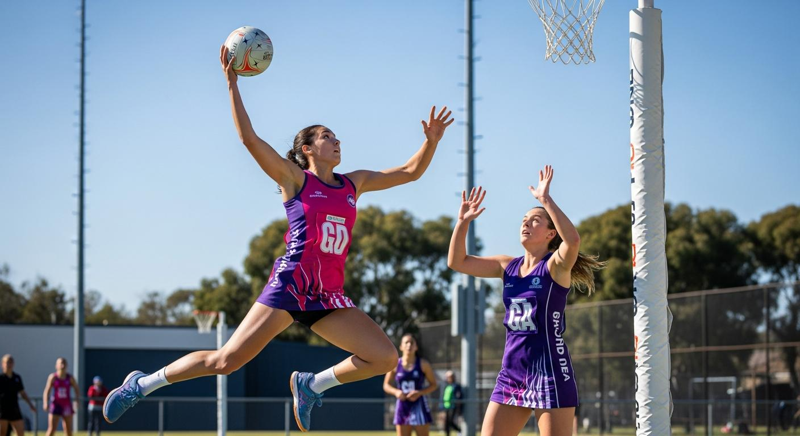
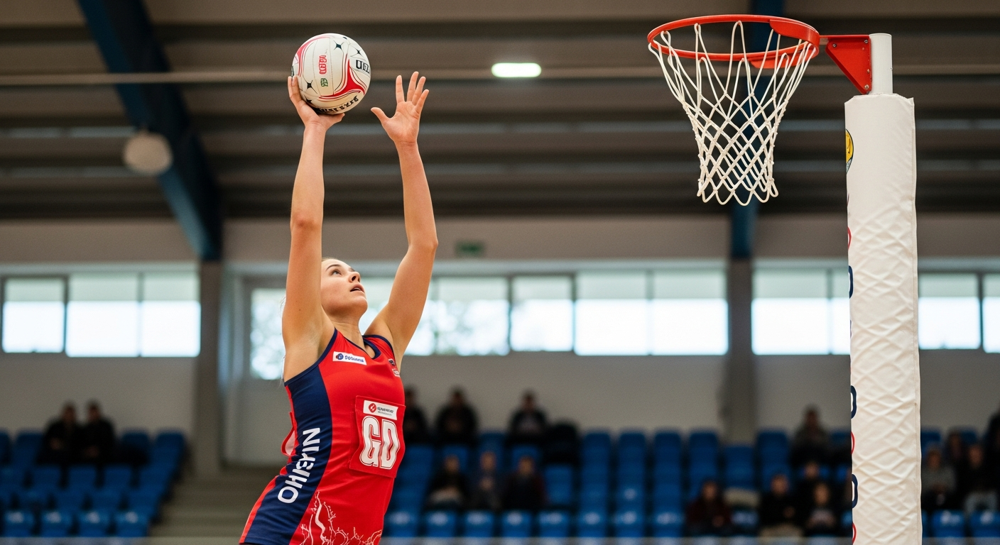
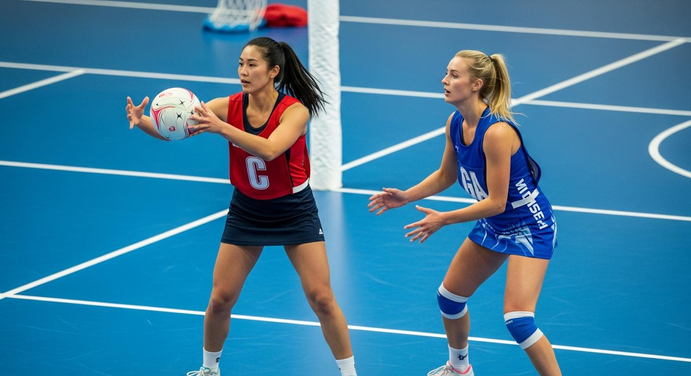
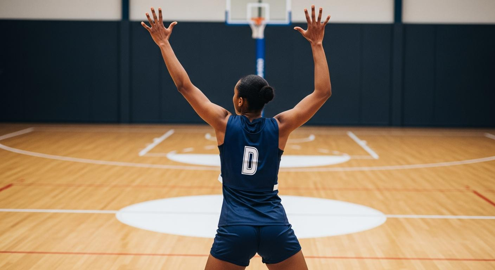
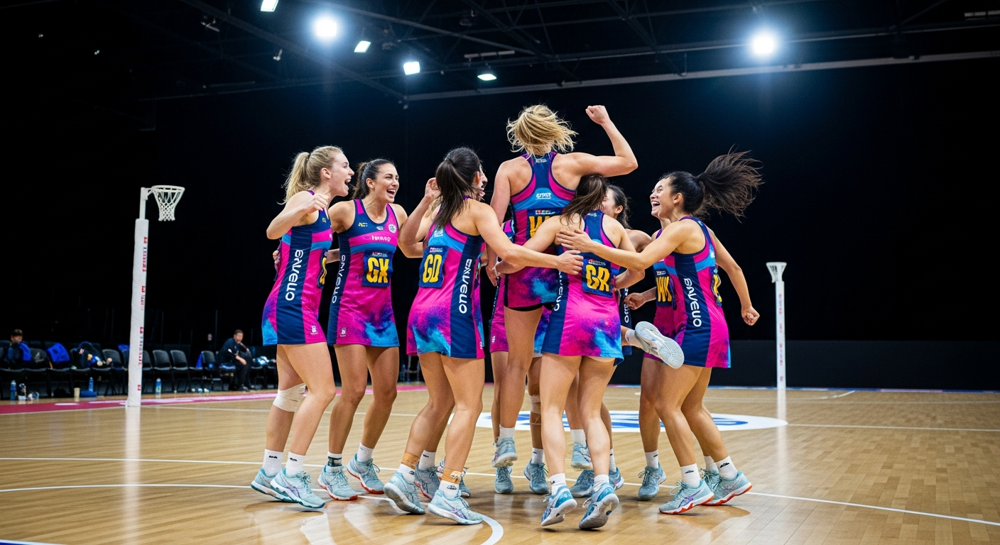

什么是无板篮球？
一项7人制团体运动，通过将球投入没有篮板的球圈中得分，且只能靠传球移动球，不允许运球
- 1禁止运球，只能传球 — 与篮球不同，不能拍球运球。必须只靠传球推进，团队配合就是实力的体现
- 2各位置活动区域受限 — 7名选手各自只能在指定区域内活动。不能自由跑动全场，明确的角色分工至关重要
- 3非接触原则 — 禁止与对方选手发生身体接触。必须保持至少0.9米（3英尺）的距离，从而保证安全公平的比赛
一句话概括 — 去掉篮球中的运球，把策略与传球发挥到极致的运动！

篮球的表亲，只能靠传球移动球的策略性团体运动
一项7人制团体运动，通过将球投入没有篮板的球圈中得分，且只能靠传球移动球，不允许运球
诞生于篮球、传播至全世界的团体运动
让我们了解无板篮球场地的结构和核心器材
让我们了解无板篮球的核心比赛规则
• 正式比赛：4节 x 15分钟（学校课堂：8分钟）
• 每节开始以中场传球进行
• 只有得分手（GS）和攻击手（GA）可以投篮
• 只能在得分圈内投篮
• 禁止运球 — 接球后只能单脚做轴心转动
• 3秒规则 — 接球后须在3秒内传球或投篮
• 越区违例 — 离开指定区域即为犯规
• 接触犯规 — 与对方距离在0.9米以内即为犯规
无板篮球最独特的特点！每个位置都有各自规定的活动区域



在无板篮球中取胜的团队战术
• 中场传球策略 — 每节开始时按预先约定的套路快速展开进攻
• 在得分圈内制造2打1 — GS与GA甩开1名防守者，创造空位投篮机会
• 掩护配合 — 队友充当"墙壁"为投篮手创造空间
• 变向/跑位接应 — 突然改变方向甩开防守，跑向空位接球
• 快速转换防守 — 进攻失败时立即回位进行防守
• 一对一紧逼盯防 — 各位置紧紧跟防对应的对方选手
• 阻断传球路线 — 伺机断球，同时减少对方的传球选择
• 空间压迫 — 在3英尺规则允许范围内最大限度限制对方视野和传球角度
安全愉快地进行无板篮球运动的注意事项
• 注意落地受伤 — 跳投或抢篮板后落地时膝盖和脚踝可能受到冲击。务必练习双脚稳定落地
• 手指受伤 — 接快速传球时手指可能被顶伤。养成用双手轻柔接球的习惯
• 遵守3英尺规则 — 不遵守距离规则可能导致碰撞受伤。务必保持0.9米以上的距离
• 脚踝、膝盖拉伸 — 由于变向和跳跃落地动作较多，应充分放松下肢关节
• 肩膀、手腕转动 — 投篮和传球大量使用肩膀和手腕，热身必不可少
• 轻松传球练习 — 正式比赛前与队友互传各种传球，找回手感
• 步法练习 — 轻松练习中枢脚转身、变向等基本步法
让我们来确认一下学到的内容吧！
总结今天学到的核心内容
① 禁止运球，只能靠传球移动球
② 各位置活动区域受限（7个位置）
③ 3秒内须传球或投篮
④ 防守须保持0.9米（3英尺）距离
① 单手/双手投篮（弧线轨迹）
② 胸前传球 & 肩上传球
③ 断球（截获传球）
④ 中枢脚转身与接球（稳定落地）
• 1891年源自篮球，全球80个国家2000万人参与
• 澳大利亚、新西兰、牙买加是无板篮球强国
• 正在争取成为奥运会正式项目
让我们在结束课程时一起讨论

无板篮球是一项由精准传球和团队默契决定胜负的运动。